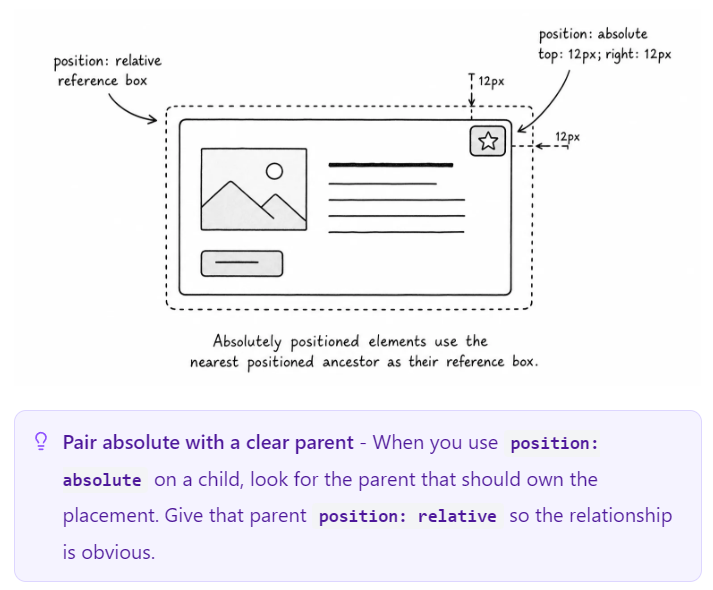
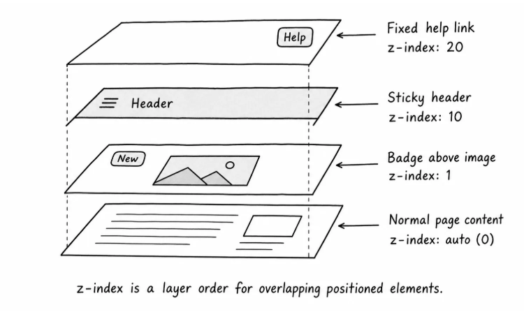

New
Build responsive interfaces
Learn how layout, spacing, media, and component rules work together in real pages.
CSS practice
The page layout should stay normal, but a few details need to be anchored in specific places.
New
Learn how layout, spacing, media, and component rules work together in real pages.
Normal flow is still doing most of the work. The sections stack, the card takes its own space, and the text stays readable.
Positioning should be saved for the pieces that need special placement, such as the label on the image or the help link in the corner.
Add enough content here so the page can scroll. That makes the sticky header and fixed help link easier to test.
When the page scrolls, notice which elements move with the document and which elements stay attached to the viewport.
Modify the CSS like this:

Now the badge should sit correctly over the image.
position: relative does not move .card-media by itself. The card is still where it was, but it can now act as the reference box for absolute children.
position: absolute removes .status-badge from normal flow. The badge no longer takes up a row below the image; it is placed 12px from the top and 12px from the right of .card-media.
In CSS, a positioned element is any element whose position value is not static, which is the default.

Positioned elements can overlap. When that happens, the browser needs to know which one should appear closer to the user, and that is what z-index controls.
z-index only matters when elements are in layers that can overlap. A higher z-index usually appears above a lower one.
The numbers are not magic; they are just a small scale. You usually do not need values like 999999. If you feel tempted to use a huge number, inspect the elements and find out which layer is actually competing.

Here is the practical map:
| Value | What it's good for |
|---|---|
| static | The default. The element stays in normal flow. |
| relative | Keeps the element in normal flow and can create a reference box for absolute children. |
| absolute | Removes the element from normal flow and anchors it to a positioned ancestor. |
| sticky | Starts in normal flow, then sticks to an offset while scrolling. |
| fixed | Removes the element from normal flow and anchors it to the viewport. |
The useful question is not "Which position value should I memorize?"
The useful question is: "What should this element be anchored to?"